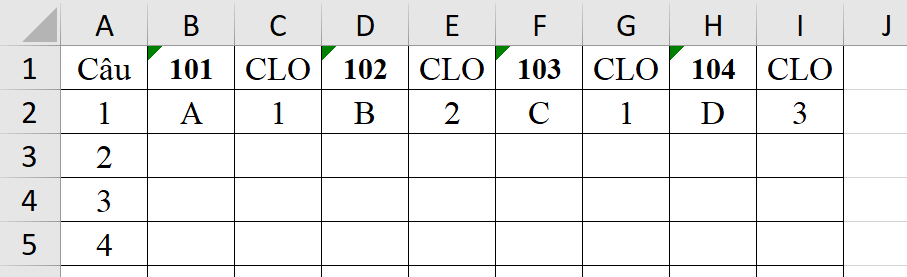

CHẤM THI CLO
Hướng dẫn
-
File UnT: File Excel xuất từ phần mềm UnT Dạy học,
trong đó phải có Số báo danh (SBD) và Mã đề.
Nếu thiếu SBD hoặc Mã đề, chương trình sẽ báo lỗi.
-
File đáp án: Chuẩn bị theo đúng mẫu dưới đây, chú ý các cột khác hoàn toàn trống. Hoặc bạn có thể tải file
Tại đây.

- Sau đó nhấn nút Đọc dữ liệu và chấm bài. Nếu thành công có thể xuất 2 bảng điểm.